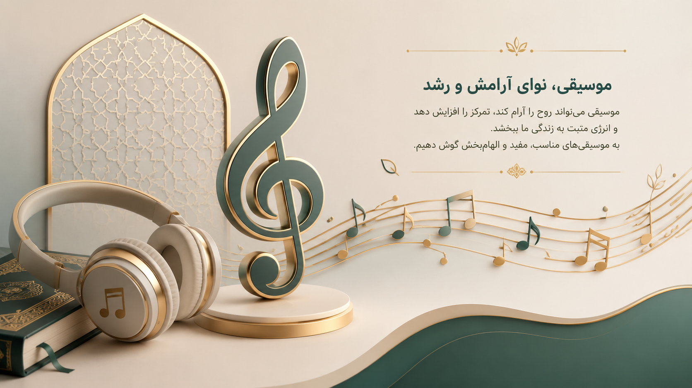

گاهی فقط چند دقیقه موسیقی آروم وآرامش بخش، حال آدم رو بهتر میکنه. 🎧 یکی از آهنگهای آرامشبخش رو انتخاب کن، چند نفس عمیق بکش و به ذهنت فرصت استراحت بده. 🌿
💙هر عادت خوب، یک قدم به سوی موفقیت است.
آرامش، بهترین هدیهای است که میتوانی به خودت بده